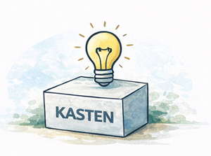

Praxisnahe Beratung, messbare Ergebnisse – direkt vor Ort in Ihrem Betrieb.
Wir begleiten produzierende Unternehmen dabei, Ordnung in ihre Prozesse, Strukturen und Zahlen zu bringen – praxisnah und nachhaltig.
Wir analysieren Ihre Abläufe direkt vor Ort, identifizieren Engpässe und entwickeln gemeinsam mit Ihnen umsetzbare Lösungen – keine theoretischen Konzepte, sondern gelebte Praxis.
Zahlen, die fehlen oder nicht verständlich sind, verhindern gute Entscheidungen. Wir helfen Ihnen, aussagekräftige Kennzahlen zu definieren, zu erfassen und zu nutzen.
Strukturen, die beim Start funktionierten, passen nicht mehr zum gewachsenen Unternehmen. Wir entwickeln Verantwortlichkeiten, Rollen und Schnittstellen, die skalieren.
Wir etablieren schlanke, wirksame Führungsroutinen direkt am Shopfloor – tägliche Besprechungen, Visualisierungen und Eskalationspfade, die Ihr Team entlasten.
Praxisnahe Workshops zu Themen wie Power BI, Prozessmanagement und Organisationsentwicklung – für Teams, die Wissen aufbauen, anwenden und verankern wollen.
Sie wissen nicht, wo anfangen? Mit unserem kalkulierbaren Einstiegspaket erhalten Sie in kurzer Zeit ein klares Bild Ihrer Situation und konkrete Handlungsempfehlungen.
Wir glauben an transparente Zusammenarbeit. Deshalb bieten wir drei klar strukturierte Pakete – damit Sie von Anfang an wissen, was Sie erwartet.
Ideal für Unternehmen, die einen strukturierten Überblick ihrer Situation gewinnen wollen – ohne große Vorab-Investition.
Wir begleiten Sie nicht nur bei der Analyse, sondern auch bei der konkreten Umsetzung der Maßnahmen in Ihrem Betrieb.
Für Unternehmen, die einen langfristigen Partner für Weiterentwicklung und Stabilisierung ihrer Organisation suchen.
Alle Pakete können durch die BAFA-Förderung bis zu 80 % bezuschusst werden. Mehr zur Förderung →
Unsere Workshops sind praxisnah und auf produzierende Betriebe zugeschnitten. Wir kombinieren Theorie mit direkter Anwendung in Ihrem Unternehmen – damit das Gelernte nicht nach dem Workshop in der Schublade landet.
Aktuell in Planung und bald buchbar: Power BI für Produktionsbetriebe, Prozessmanagement-Workshop, Führungsroutinen im Shopfloor.
Workshop anfragen